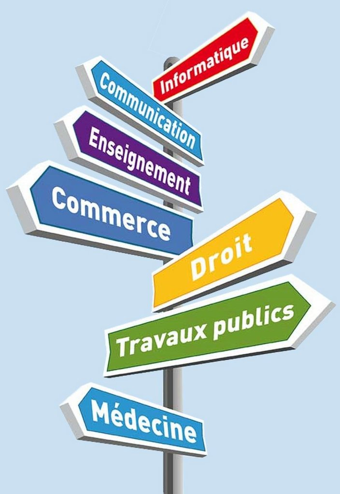

A PROPOS


Qui suis-je ?
Après avoir obtenue une licence STAPS APAS j'ai décidé de travailler pendant deux ans afin de financer mon diplôme de coach sportif. Hors, j'ai dû quitter le milieu sportif et donc me réorienter. Le domaine de l'informatique s'est alors présenté à moi et j'ai désormais le souhait de devenir développeuse full-stack.
- Pancher Léna
- 06 06 06 06 06
- lenapancher@gmail.com
- Paris, Ile-de-France